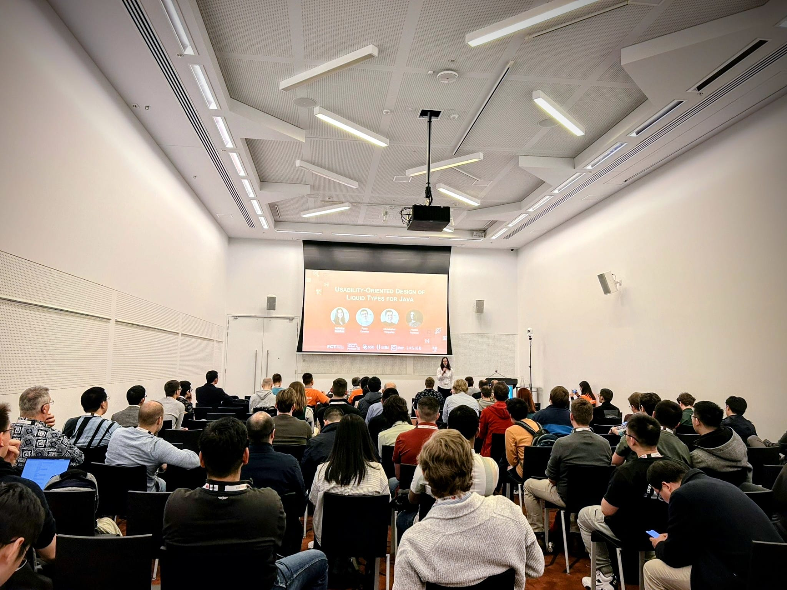

Research Interests
I am interested in both the Design of Programming Languages and Usable Software Verification. My current projects aim to enhance software reliability by integrating Software Verification with Human-Computer Interaction techniques, thereby creating tools that are valuable, practical, and usable by developers in their everyday work.
This is one of the goals of LiquidJava, check it out!